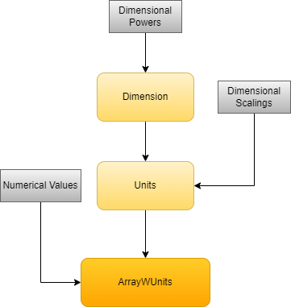
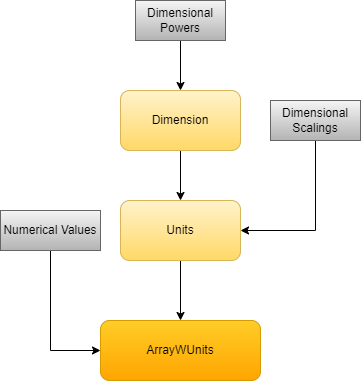

Working With Units in Scarabaeus#
Introduction#
Many aspects of working in Scarabaeus necessitate unitized values. To support this end, Scarabaeus employs multiple classes that work in conjuction to make performing these sorts of calculations as simple as possible. Working with units in Scarabaeus should feel as natural as working with them “by hand”.
In this document, we will walk through a section of the data hierarchy (see below) outlined in Scarabaeus Data Flow that defines how unitized values are structured within Scarabaeus, as well as best practices for their utilization, their importance in performing calculations, and examples of their most common use-cases.
 

The Dimensions Class#
What are Dimensions#
The foundational unit class in Scarabaeus is the Dimensions class. Dimensions objects represent dimensionality,
or fundamental physical quantities — they do not contain any scaling factors, only relational powers to Scarabaeus’
four base units:
Mass
Length
Time
Angle
These quantities are derived from three of the SI unit system’s base units: Mass from the kilogram, Length from the meter, and Time from the second. Additionally, a fourth “dimension” — Angle — is included due to its relevance to many unitary applications despite the inherent non-dimensionality of angles.
The Dimensions class is rarely invoked directly while working in Scarabaeus, but it is necessary for
all operations involving units. From the data flow image in the introduction, we can see that Dimensions
are one of the two components required to construct a Unit, the other being scalings which we will
explore in the next section. To begin, let’s walk through the construction process of a Dimensions object.
Read through the full Dimensions documentation for a complete list of every method and property.
Constructing Dimensions#
The Dimensions constructor is very small, with only a single input: dim_pwrs. This is a
A 1x4 vector of integers representing the power relations to each of the four base dimensions as noted above.
For example, Length would be passed as [0, 1, 0, 0], Area as [0, 2, 0, 0], and Volume as [0, 3, 0, 0].
See the code below for a few more examples.
import scarabaeus as scb
# construct a dimension of Length
dim_length = scb.Dimensions([0, 1, 0, 0])
# a dimension of Angle
dim_angle = scb.Dimensions([0, 0, 0, 1])
# or a dimension of Area
dim_area = scb.Dimensions([0, 2, 0, 0])
## we can also create compound dimensions
# for example Force
dim_force = scb.Dimensions([1, 1, -2, 0])
# or even dimensionless objects
dimless = scb.Dimensions([0, 0, 0, 0])
In the above code, we also created Dimensions objects that span multiple dimensions like Force, defined as Mass
multiplied by Length per Time squared. Angles do not contribute to this dimension and so are given a zero power.
Another important case to notice is the dimensionless Dimensions object, created when all four dimensional
powers are set to zero.
Data Held in Dimensions#
Aside from the dimensional powers we passed to the object upon construction, there is one more
piece of information held within a Dimensions object: its name.
A Dimensions’ name property is dynamically created during initialization based upon the given
dimensional powers. It is the dimensional power array written in words. To better explain,
let’s look at a few examples of the name property for the Dimensions objects we created
in the previous section:
# length is automatically assigned
print(dim_length.name)
>>> 'Length'
# known compound dimensions like Force are also recognized
print(dim_force.name)
>>> 'Force'
## names are automatically generated if they do not match a
## known dimension
# create an unnamed dimension
dim_no_name = scb.Dimensions([3, 5, -2, 0])
# the dimension's name will be given in words
print(dim_no_name.name)
>>> 'cubic Mass times Length to the 5th per square Time'
Note
The name property is returned by the Dimensions class’ __repr__ method and so simply printing a Dimensions object is sufficient to access its name. The name property is specifically accessed in the above code to highlight its storage within the class.
Notice that for cases where the constructed dimension does not have a defined named, it is given
one using the powers in its dimensional array. To see a list of all named dimensions and their
respective powers, call Dimensions.disp_named_dims(). To define new named dimensions,
call Dimensions.def_new_named_dim().
The Units Class#
What are Units#
Now that we’ve defined the Dimensions class, it’s time to use them to build a Units object.
Where Dimensions are not used directly very often, Units crop up in almost every script,
acting as Scarabaeus’ representation of, from NIST:
“…a particular physical quantity, defined and adopted by convention, with which other particular quantities of the same kind are compared to express their value.”
From the diagram at the beginning of this document, we can see that the next step up from a
Dimensions object is the Units object, which contains not only the dimensional information
held by a Dimensions object, but additionally each dimension’s respective scaling.
These scalings are applied with respect to Scarabaeus’ four base units, similar to its four base dimensions:
Grams
Meters
Seconds
Radians
Each index of the scaling vector corresponds to its respective base unit. Read through the full Units documentation for a complete list of every method and property.
Constructing Units#
For the vast majority of cases, you should not instantiate Units objects with their usual
constructor. We will cover the preferred way shortly, but it is useful to quickly run through the “nitty gritty”
method first.
Where the Dimensions class takes in a 1x4 vector of dimensional powers, the Units class also connects
another 1x4 vector of floats.
Also, notice that, by Scarabaeus’ coding conventions, we instantiate our units under the “Generate Units” header.
import scarabaeus as scb
#------------------#
# Generate Units #
#------------------#
# first create a dimension of length
dim_length = scb.Dimensions([0, 1, 0, 0])
# and then apply a scaling to that dimension (1000 m = 1 km)
km = scb.Units(dim_length, [0, 1e3, 0, 0])
As noted earlier, the most common (and efficient) way to create units is to request them from the get_units() method.
This method takes in a string or a list of strings and returns a Units object for each query in the list by performing
a similar set of steps we took when creating a unit the hard way above. Input strings follows the same format as
any metric unit: [prefix][base unit].
For example, passing the string 'm' will first create a Dimensions object of Length, and then apply
a scaling of one to it, returning a Scarabaeus representation of a meter. To create a kilometer representation,
we append the the kilo prefix as 'km'. The method recognizes it and instead of scaling by one it scales
by one thousand.
# request a single unit
m = scb.Units.get_units('m')
# request multiple units in one line
km, rad, N, sec, unitless = scb.Units.get_units(['km', 'rad', 'N', 'sec', 'unitless'])
# request one of get_unit's predefined unit sets
kg, km, sec, rad, deg, N, mu = scb.Units.get_units('common')
Note
Remember that, to ensure that your script runs as efficiently as possible, it is important to request only the units you need. get_units() sets are generally used for convenience during development. Once you’ve finished development on a script, don’t forget to replace the unit set line with a request for only the units you utilize in your code.
Notice that get_units() supports requests for more than just base units with prefixes. Many compound and
special units, like Newtons or days, can also be fetched. It is important to note, however, that not all of these units
interact with metric prefixes, for example a milliday. To see a list of all recognized special units, as well as their
compatibility with prefixes, call the disp_named_units() method. To define a new named unit, as well as its
prefix compatibility, use the def_new_named_units() method.
# millidays don't exist -> an error is raised
day = scb.Units.get_units('mday')
>>> ValueError: The requested unit [day] is incompatible with the given prefix.
Note
Currently get_units() does not support requests for unnamed compound units like 'km/s'. Instead you would need to request kilometers and seconds separately and create km/s yourself by division.
Finally, it is important to note that, just like when working “by hand”, you can perform mathematical operations on units in Scarabaeus. These can be done in-line with Python’s usual math operations, as well as to set a new variable for instances where you plan to reuse some compound unit multiple times.
# square a unit in-line
print(km**2)
>>> 'km^2'
# create a new unit by performing operations on other units
km_per_sec = km / sec
print(km_per_sec)
>>> 'km/s'
Data Held in Units#
As we’ve seen while constructing a Units object, each instance contains the dimensions of the unit
and its scalings. Just like Dimensions, it also holds a string describing its name which is
dynamically generated during construction.
# all of the properties contained within a Units object
print(f'The name of the unit: {km.name}')
print(f'Its dimensions : {km.dimensions}')
print(f'Its scalings : {km.scales}')
>>> The name of the unit: km
>>> Its dimensions : Length
>>> Its scalings : [ 0 1000 0 0]
This name generation extends to compound units as well:
# create a compound unit
some_unit = km**3 / (rad * sec**2)
print(f'The name of the unit: {some_unit.name}')
print(f'Its dimensions : {some_unit.dimensions}')
print(f'Its scalings : {some_unit.scales}')
>>> The name of the unit: km^3/(sec^2*rad)
>>> Its dimensions : Cubic Length per Square Time per Angle
>>> Its scalings : [ 0. 1000. 1. 1.]
Note
Name generation occurs in order from left to right that Scarabaeus base units are defined in: g, m, sec, rad. This means that even though we gave the denominator in rad * sec^2, the name returns as sec^2 * rad. These are equivalent, but the behavior is still worth noting.
The ArrayWUnits Class#
What are ArrayWUnits#
It’s finally time to attach values to the units we’ve spent the last two sections building up. We’ll
do this with Scarabaeus’ ArrayWUnits (read “array with units”) class, or AWU for short.
With our Units created once at the top of a Scarabaeus script, we then assign numerial values to them using
AWU’s, which act as our “numbers”. Consider how you might solve the below equation:
Where \(a = 1 kg\), \(b = 1 m\), and \(c = 1 s^2\). You would probably first separate the numerical values from each variable and calculate the resulting number, then separate the units of each variable and calculate the resulting unit, and finally recombine the value and the unit to get \(1 kg\frac{m}{s^2}\). AWU’s perform this same process for you in your code, making them extremely powerful for doing physical calculations!
This same principle can be taken a step further and applied to matrix math:
Where each element of \(A\) has units of \(m\) and each element of \(B\) has units of \(Hz\). The solution would be a 3x3 identity matrix with units \(\frac{m}{s}\).
To ensure flexibility between operations like the first example and the second, ArrayWUnits treats all values as matrices.
For an AWU, a scalar value is simply a 1x1 matrix.
Read through the full ArrayWUnits documentation for a complete list of every method and property.
Constructing ArrayWUnits#
To create an AWU, we must pass in its values, as well as the units we want to assign to them. There are two cases for this:
- Homogeneous unit input:
Each numerical value is given in the same unit.
Scalar values are necessarily homogeneous.
- Heterogeneous unit input:
One or more numerical values are given in different units.
Non-scalar values do not have to be heterogeneous.
We will begin by constructing an AWU of the first case — one with homogeneous units. Note that we
must also generate Units to pass into our constructor.
import scarabaeus as scb
import numpy as np
#------------------#
# Generate Units #
#------------------#
kg, km, sec, rad, unitless = scb.Units.get_units(['kg', 'km', 'sec', 'rad', 'unitless'])
# create a scalar AWU (homogeneous)
one_km = scb.ArrayWUnits(1, kg)
# create a homogeneous vector AWU
km_vec = scb.ArrayWUnits([[1], [2], [3]], km /sec)
# create a unitless AWU without needing to define unitless unit
untlss_awu = scb.ArrayWUnits(1, None)
This was the simpler of the two cases because we can easily assign the same unit to all values.
We were able to create a basic one kilogram, as well as a column vector with units of kilometers
per second. Also notice that we didn’t need to define the unitless Units object to create a unitless
value. This is a special case where passing no unit defaults to a unitless AWU. We still created a unitless
object for the next section.
Now let’s look at the slightly more complicated second case — a non-homogeneous (heterogeneous) AWU. Since AWU’s accept either lists or Numpy arrays, we’ll use Numpy to more easily create both of our inputs.
# create matrix defining units
non_hom_uns = np.array([[km , unitless, unitless],
[unitless, rad , unitless],
[unitless, unitless, sec ]])
# pass with values
non_hom_mat = scb.ArrayWUnits(np.eye(3), non_hom_uns)
The above code creates a matrix:
Non-homogeneous AWU’s tend to represent things like state vectors while homogeneous AWU’s tend to represent things like position or velocity vectors.
Data Held in ArrayWUnits#
ArrayWUnits objects contain much more information than their simpler constituents Dimensions and
Units. Throughout the following, we will go over each of these properties using a scalar and a
matrix AWU.
# scalar AWU
km_1x1 = scb.ArrayWUnits(1, km)
# matrix AWU
km_3x3 = scb.ArrayWUnits(np.eye(3), km)
The “numbers” of the AWU are stored in the values property, while the associated units are stored
in the units property. Both of these properties are stored internally as Numpy arrays,
but in the case of a scalar (1x1) AWU, they are converted to their respective singular data types when accessed
externally.
# internally, values and units are stored as np.arrays
print(f'Internal values: {km_1x1._values} have type {type(km_1x1._values)}')
print(f'Internal units : {km_1x1._units} have type {type(km_1x1._units)}')
# externally, for scalar AWU's, they're returned as their element objects
print(f'External values: {km_1x1.values} have type {type(km_1x1.values)}')
print(f'External units : {km_1x1.units} have type {type(km_1x1.units)}')
>>> Internal values: 1 have type np.array
>>> Internal units : km have type np.array
>>> External values: 1 have type int
>>> External units : km have type Units
This is to ensure parity within the class itself while also allowing for scalar AWU’s to act like scalars instead of 1x1 matrices.
Additionally, AWU’s also contain information about their number of columns and rows by the shape property,
the number of elements they contain by the size property, and whether or not all of its values
share the same unit or not by the homogeneous_units property.
Examples of Use-Cases#
Now that we’ve gone through all of the classes that represent units in Scarabaeus, it’s time
to look at a few common use-cases for them. Because the units are very rarely useful without numerical values attached,
this section will focus almost solely on utilizing ArrayWUnits.
Use-Case #1 - Manipulating Units#
Before we look into AWU use-cases, let’s quickly look at how we can most effectively use Units in
Scarabaeus. To make things as simple as possible, we’ll use the common unit set from get_units(). Remember
that this set is normally only used for development as it is unlikely you will require all of these units in your
script and creating unused units adds, albeit small, unnecessary overhead to your code.
#------------------#
# Generate Units #
#------------------#
kg, km, sec, rad, deg, N, mu = scb.Units.get_units('common')
## you can multiply units by numpy arrays or lists to:
# make column vectors
cm_m_km_col = m * np.array([[10**-2], [1], [10**3]])
print(cm_m_km_col)
>>> [[cm]
[m]
[km]]
# or row vectors
cm_m_km_row = m * [10**-2, 1, 10**3]
print(cm_m_km_row)
>>> [cm m km]
three_kms = km * np.ones(3)
print(three_kms)
>>> [km km km]
# as well as matrices
cm_m_km_mat = m * (np.array([10**-2, 1, 10**3]).transpose() * np.eye(3))
print(cm_m_km_mat)
>>> [[cm 0.0 0.0]
[0.0 m 0.0]
[0.0 0.0 km]]
After we generated our units, we also created a column and row vector, as well as a matrix, of units. You can see how this makes our lives easier when defining AWU’s. As another example, let’s use concatenation to create a 6x1 column vector with position and velocity units:
pos_vel_vec = np.concatenate((km * np.ones((3, 1)), (km/sec) * np.ones((3, 1))))
print(pos_vel_vec)
>>> [[km]
[km]
[km]
[km/sec]
[km/sec]
[km/sec]]
As you can see, Units objects interact with both lists and numpy arrays just like a number would. We can use this
to our advantage, especially when working with AWU’s.
Use-Case #2 - Utilizing Enclosed Data in an AWU#
Earlier in this document we walked through all of the different pieces of data held within an AWU, but
we didn’t talk about why they were useful. In this first use-case, we will explore a few different patterns
that are common when working with AWU’s and how to utilize the data held within them to make coding
easier for ourselves in Scarabaeus. We will use the Units generated in the previous use-case. The first
pattern will be input validation:
# set up two AWU's for the examples
awu_one = scb.ArrayWUnits(1, km)
awu_two = scb.ArrayWUnits([[1], [2], [3], [4], [5], [5]], pos_vel_vec)
#-----------------------------#
# access the values of an AWU #
#-----------------------------#
if awu_one.values == awu_two.values:
print('Values equal for one and two.')
else:
print('Values not equal for one and two.')
>>> 'Values not equal for one and two.'
#----------------------------#
# access the units of an AWU #
#----------------------------#
if awu_one.units == awu_two.units:
print('Units equal for one and two.')
else:
print('Units not equal for one and two.')
>>> 'Units not equal for one and two.'
# this is useful when you need to grab the units from one AWU and put them in another as well
awu_three = scb.ArrayWUnits(100, rad)
new_awu = scb.ArrayWUnits(np.eye(3), awu_three.units)
Use-Case #3 - Appending to AWU’s#
Another useful pattern for AWU’s is the append() function, which, as the name entails,
appends a given AWU to another AWU. It is important to note that depending on the inputs given,
ArrayWUnits.append() will funciton differently. See below:
#------------------#
# Generate Units #
#------------------#
kg, km, unitless = scb.Units.get_units(['kg', 'km', 'unitless'])
#--------------------#
# append to a vector #
#--------------------#
one = scb.ArrayWUnits([1, 2, 3], kg)
two = scb.ArrayWUnits(4, kg)
print(f'Before appending:\n'
f'{one}\n'
f'{two}')
one = one.append(two)
print(f'After appending:\n'
f'{one}')
>>> Before appending:
[1. 2. 3.] [kg ... kg]
4.0 kg
>>> After appending:
[1. 2. 3. 4.] [kg ... kg]
#--------------------#
# append to a matrix #
#--------------------#
three_mat = np.array([[km , unitless, unitless],
[unitless, km , unitless],
[unitless, unitless, km ]])
three = scb.ArrayWUnits(np.eye(3), three_mat)
four_row = scb.ArrayWUnits(np.ones((1, 3)), km * np.ones((1, 3)))
four_col = scb.ArrayWUnits(np.ones((3, 1)), km * np.ones((3, 1)))
print(f'Before appending:\n'
f'three :\n{three}\n\n'
f'four_row:\n{four_row}\n\n'
f'four_col:\n{four_col}')
>>> Before appending:
three:
[[1. 0. 0.]
[0. 1. 0.]
[0. 0. 1.]] [non-homogeneous]
four_row:
[[1. 1. 1.]] [km ... km]
four_col:
[[1.] [[km]
[1.] [⋮ ]
[1.]] [km]]
# unspecified axis flattens both and then appends
three_no_ax = three.append(four_row)
print(three_no_ax)
>>> [1. 0. 0. 0. 1. 0. 0. 0. 1. 1. 1. 1.] [non-homogeneous]
# along first axis to place below
three_ax_0 = three.append(four_row, 0)
print(three_ax_0)
>>> [[1. 0. 0.]
[0. 1. 0.]
[0. 0. 1.]
[1. 1. 1.]] [non-homogeneous]
# along second axis to place beside
three_ax_1 = three.append(four_col, 1)
print(three_ax_1)
>>> [[1. 0. 0. 1.]
[0. 1. 0. 1.]
[0. 0. 1. 1.]] [non-homogeneous]
Use-Case #4 - Converting AWU’s#
There are many instances where you may want to convert an AWU from one unit to another. Instead of
having to find and apply conversion ratios yourself, you can use AWU’s convert_to()
method.
#------------------#
# Generate Units #
#------------------#
sec, day, cm, m, km = scb.Units.get_units(['sec', 'day', 'cm', 'm', 'km'])
#-------------------------#
# converting scalar AWU's #
#-------------------------#
# create a unit for a week
week = scb.ArrayWUnits(7, day)
# convert it to seconds
week_sec = week.convert_to(sec)
print(f'A week in seconds = {week_sec}')
>>> A week in seconds = 604800.0 sec
# and back to days
week = week_sec.convert_to(day)
print(f'A week in days = {week}')
>>> A week in days = 7.0 day
#-----------------------------#
# converting non-scalar AWU's #
#-----------------------------#
# array of different units with same dimensions
cm_m_km = scb.ArrayWUnits([1, 1, 1], [cm, m, km])
print(f'Before conversion:\n'
f'{cm_m_km}')
>>> Before conversion:
[1. 1. 1.] [non-homogeneous]
# convert all to kilometers
all_km = cm_m_km.convert_to(km)
print(f'After conversion:\n'
f'{all_km}')
>>> After conversion:
[1.e-05 1.e-03 1.e+00] [km ... km]
This conversion method can also be used in conjunction with some of the input validation we went over
in Use-Case #2 to enforce a specific unit type when performing calculations. Suppose we have a function
compute_schwarzschild_radius() that requires our calculations be performed using
CGS units.
The equation for the Schwarzschild radius of a black hole is:
Where \(G\) and \(c\) are physical constants whose values are irrelevant to our example. The important fact
to note is that \(M\) must be measured in grams for our case and so we want to make sure any input we receive goes
into our equation as grams. We can do this by first ensuring that our input is of dimension Mass (we can’t convert
Angular units to Mass units). Once we know that the conversion is possible, we can then use convert_to() to
guarantee that no matter what unit we received, we will be performing our calculations with grams.
#------------------#
# Generate Units #
#------------------#
g, cm, sec = scb.Units.get_units(['g', 'cm', 'sec'])
def compute_schwarzschild_radius(mass : scb.ArrayWUnits) -> scb.ArrayWUnits:
"""
Example method to illustrate unit enforcement.
Parameters
----------
mass : ArrayWUnits of dimension Mass
The mass of the object.
Returns
-------
r_s : ArrayWUnits of dimension Length
The computed Schwarzschild radius for the given mass.
"""
#-----------------------------------#
# input validation and conditioning #
#-----------------------------------#
# first ensure that unit conversion is possible (dimension of Mass)
if mass.units.dimensions.name != 'Mass':
bad_dim_err = ('Argument [mass] must be of dimension Mass. '
f'Received: {mass.units.dimensions.name}.')
raise TypeError(bad_dim_err)
# conversion is possible -> enforce grams
mass = mass.convert_to(g)
#--------------------#
# compute and return #
#--------------------#
# from: https://www.physics.rutgers.edu/~abrooks/342/constants.html
# NOTE: Scarabaeus does not use CGS units, normally these values should come from Scarabaeus'
# Constants library
G = scb.ArrayWUnits(6.6743e-8, cm**3 / (g*s**2))
c = scb.ArrayWUnits(2.9979e10, cm / sec)
# calculate
r_s = (2*G*mass) / c**2
return r_s
Note that the above code follows Scarabaeus coding conventions. It also makes our code more flexibile, since any unit of Mass may be taken in without breaking our equation.
Further Reading#
Congratulations! You now know how units work in Scarabaeus! It’s time to see how they’re used in more complex interactions. The next section, Epochs and Time in Scarabaeus, serves as a good starting point for working with units.